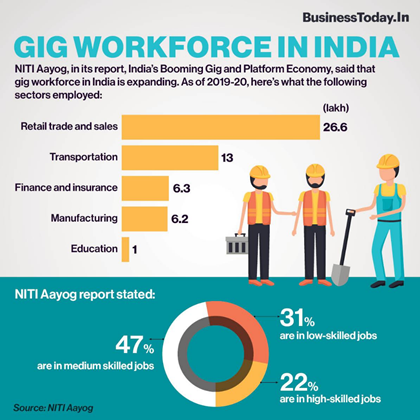

NITI Aayog
Report on India's Gig and Platform Economy: Highlights
Relevant to HR Team of All Mahindra Businesses
NITI Aayog today launched a report titled ‘India's Booming Gig and Platform Economy’.
-
According to the report, India's gig workforce is expected to expand to 2.35 crore by 2029-30.
-
The report estimates that in 2020–21, 77 lakh (7.7 million) workers were engaged in the gig economy. They constituted 2.6% of the non-agricultural workforce or 1.5% of the total workforce in India.
-
NITI Aayog recommended extending social security measures for such workers and their families in partnership mode as envisaged in the Code on Social Security. Gig and Platform Economy
-
Gig Economy is a labour market for those who are engaged in livelihoods outside the traditional employer-employee arrangement. They are further classified into platform and non-platform workers.
-
Platform workers are those whose work is based on online software apps or digital platforms. While non-platform gig workers are generally casual wage workers and own-account workers in the conventional sectors, working part-time or full time.

Objectives
-
A first-of-its-kind study to present comprehensive perspectives and recommendations on the gig–platform economy in India.
-
To provide a scientific methodological approach to estimate the current size and job-generation potential of the sector.
-
To highlights the opportunities and challenges of this emerging sector and presents global best practices on initiatives for social security and delineates strategies for skill development and job creation for different categories of workers in the sector.
Major Issues Raised by the Report
-
Accessibility:
-
Even though the gig economy, with the wide variety of employment options it offers, is accessible to all those who are willing to engage in such employment, access to internet services and digital technology can be a restrictive factor.
-
This has made the gig economy largely an urban phenomenon.
-
Job and Income Insecurity:
-
Gig Workers do not get benefit from labour regulations pertaining to wages, hours, working conditions, and the right to collective bargaining.
-
Occupational Safety and Health Risks:
-
Workers engaged in employment with the digital platforms, particularly, women workers in the app-based taxi and delivery sectors, face various occupational safety and health risks.
-
Skills Mismatch:
-
Varying degrees of vertical and horizontal skills mismatch can be observed on online web-based platforms.
-
According to International Labour Organization (ILO) surveys, workers with higher educational achievements are not necessarily finding work commensurate with their skills.
-
Challenges faced due to Terms of Contract:
- Working conditions on digital platforms are largely regulated by the terms of service agreements. They tend to characterize the contractual relationship between the platform owner and worker as other than one of employment.
Key Findings
-
The report estimates that in 2020–21, 77 lakh (7.7 million) workers were engaged in the gig economy.
-
They constituted 2.6% of the non-agricultural workforce or 1.5% of the total workforce in India. The gig workforce is expected to expand to 2.35 crore (23.5 million) workers by 2029–30.
-
Gig workers are expected to form 6.7% of the non-agricultural workforce or 4.1% of the total livelihood in India by 2029–30.
-
At present, about 47% of the gig work is in medium skilled jobs, about 22% in high skilled, and about 31% in low skilled jobs.
-
Trend shows the concentration of workers in medium skills is gradually declining and that of the low skilled and high skilled is increasing.
-
A majority of the gig workers, i.e. about 26.6 lakh (2.7 million) were involved in retail trade and sales, and about 13 lakh (1.3 million) were in the transportation sector.
-
About 6.2 lakh (0.6 million) were in manufacturing and another 6.3 lakh (0.6 million) in the finance and insurance activities.
-
The retail sector saw an increase of 15 lakh (1.5 million) workers during 2011-12 to 2019-20, transport sector 7.8 lakh (0.8 million), and manufacturing 3.9 lakh (0.4 million). In the education sector, the expansion was from 66,000 to more than 1 lakh by 2019-20
Major Recommendations
-
‘Platform India Initiative’::
-
On the lines of the ‘Start-up India initiative’, accelerating platformization, skill development and social financial inclusion, can provide a framework to balance the flexibility offered by platforms and social security of workers.
-
Self-employed Individuals engaged in the business of selling regional and rural cuisine, street food, etc., can be linked to platforms so that they can sell their produce to wider markets in towns and cities.
-
Funding Support:
-
Access to institutional credit may be enhanced through financial products specifically designed for platform workers and those interested in setting up their own platforms.
-
Venture capital funding, grants and loans from banks and other funding agencies should be provided to platform businesses of all sizes.
-
Gender Sensitization:
-
Encouragement of behaviour modification through raising awareness of gender equality concerns..
-
Other recommendations include undertaking a separate enumeration exercise to estimate the size of the gig and platform workforce and collecting information during official enumerations (Periodic Labour Force Survey) to identify gig workers.
Comments
|
Suman Bery, Vice Chairman, NITI Aayog
|
This report will become a valuable knowledge resource in understanding the potential of the sector and drive further research and analysis on gig and platform work
|
|
Amitabh Kant, CEO, NITI Aayog
|
The recommendations in this report will serve as a crucial resource for ministries, state governments, training providers, platform companies and other stakeholders to work in collaboration for promoting growth and employment opportunities in this sector
|
Conclusion
This is a noble attempt of NITI Aayog to look at the gig economy and recommend policy measures for the benefit of gig workers in India. Gig economy is increasing these days due to proliferation of app-based services in India.
Currently, there are severe data gaps when it comes to estimating the size of the gig economy in India. The NITI Aayog report has taken into account the limited data that is available on employment and other related aspects to estimate the size of the gig workforce by building on assumptions derived from micro and macro studies in the country. However, the report makes it clear that the estimation is only indicative and may not represent the true size of the gig workforce.